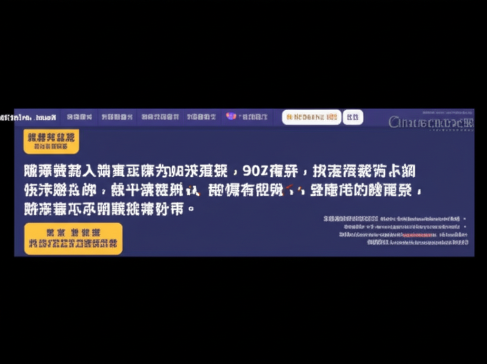

近期新聞摘要與分析
引言
本次新聞摘要涵蓋了地方政府公告、醫療健康資訊、交通安全、以及社會議題等多個方面，旨在提供全面的信息概覽，並針對其中部分熱點話題進行簡要分析。
主體內容
第一點：地方政府動態與健康資訊
- 兴隆台区人民政府 (https://www.xlt.gov.cn/): 政府工作動態主要集中在消防安全檢查和疾病預防控制方面。2025年的時間戳顯示這是測試數據或延遲更新的內容。
- 南投縣政府衛生局 (https://www.ntshb.gov.tw/): 衛生局重點關注新冠疫情和毒品防治，呼籲民眾接種疫苗，並提供毒品防治諮詢專線。
分析: 地方政府的工作重心依然放在公共安全和公共衛生上，特別是疫情常態化下的疫苗接種推廣以及毒品防治工作，體現了政府對於民生福祉的關注。
第二點：醫療健康新聞
- 40歲男血壓爆高險中風腎臟交感神經阻斷術助控壓減藥 (https://udn.com/news/story/7266/8794005): 報導指出，高血壓對健康有嚴重危害，除了藥物治療，生活方式的調整也至關重要，而腎臟交感神經阻斷術是一種新的治療選擇。
- 动物油比植物油更容易让人发胖……是真是假？ (https://pub-zhtb.hizh.cn/a/202506/09/AP684665f3e4b09a9b4a13f1f1.html): 文章建議控制每日烹調油攝入量，並指出高血壓、高血脂人群需特別注意。
- 女性預防子宮頸癌必看！ 疫苗接種＋抹片一次搞懂 (https://www.healthnews.com.tw/article/65259/): 強調 HPV 疫苗預防子宮頸癌的重要性，以及定期抹片檢查的必要性。
- 2药方案难以满足高血压治疗需求？来自EnligHTN研究的启示 (https://www.163.com/dy/article/K1KV48CC0514ADUL.html): 探討了高血壓治療方案的有效性，以及控制血壓的挑戰。
分析: 醫療健康新聞涵蓋了高血壓、癌症預防、飲食健康等多個方面，突顯了健康管理的重要性。公眾應重視生活習慣的調整、定期體檢，以及及時就醫。
第三點：其他社會議題
- 台鐵海盜船? 民眾搭普悠瑪車廂"劇烈搖晃" 搭普悠瑪超晃! 網友分享"早餐全都吐光光" (https://www.youtube.com/watch?v=KEpY-9CaOAA): 報導了台鐵普悠瑪列車行駛過程中出現劇烈搖晃的情況，引發乘客不適。
- 社區新聞| 紐約| 世界新聞網 (https://www.worldjournal.com/wj/cate/ny/121390): 關注紐約本地社區新聞，提供及時且正確的信息。
- 壹蘋10點強打｜「波波中藥師」恐竄全台！修35學分就可賣中藥衛福 (https://tw.nextapple.com/life/20250609/09D8BE1B2DED7D854E5F102172EB29B6): 報導了衛福部放寬中藥販賣業者資格，引發對於中藥品質和安全性的擔憂。
分析: 這些新聞反映了社會對於交通安全、社區發展以及專業資格認證的關注。尤其是台鐵的行車安全問題，需要相關部門加強檢修，保障乘客安全。中藥販賣業資格放寬的政策，則需要進一步的監督和管理，確保中藥品質。
結論
本次新聞摘要涵蓋了政府動態、醫療健康、交通安全以及社會議題等多個方面，反映了社會各界對於民生福祉、公共安全和健康管理的關注。了解這些資訊，有助於民眾更好地了解社會動態，做出更明智的決策。